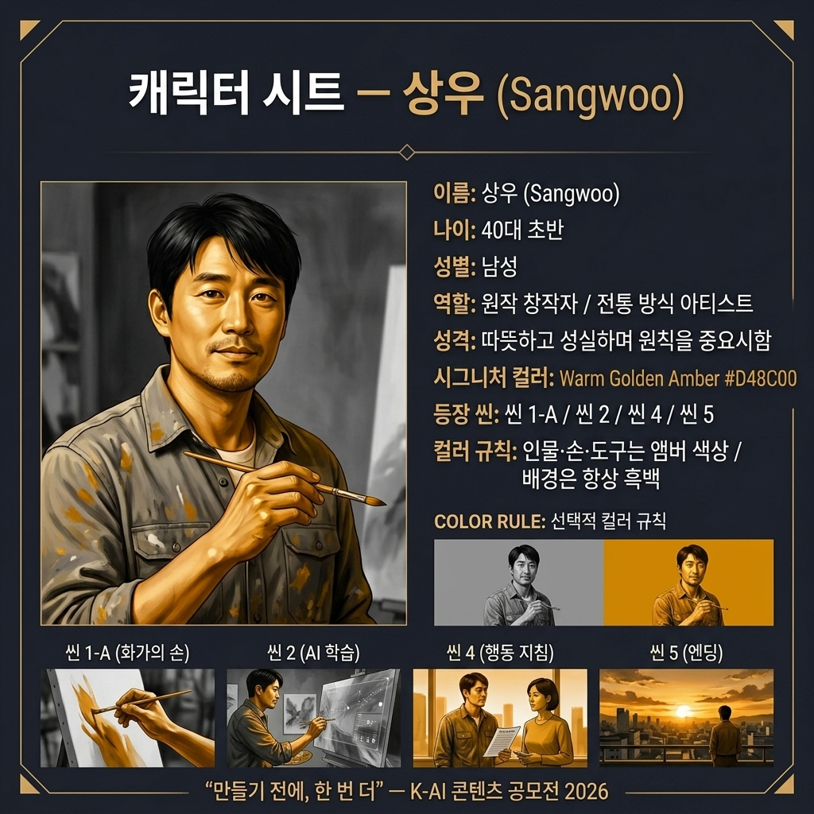
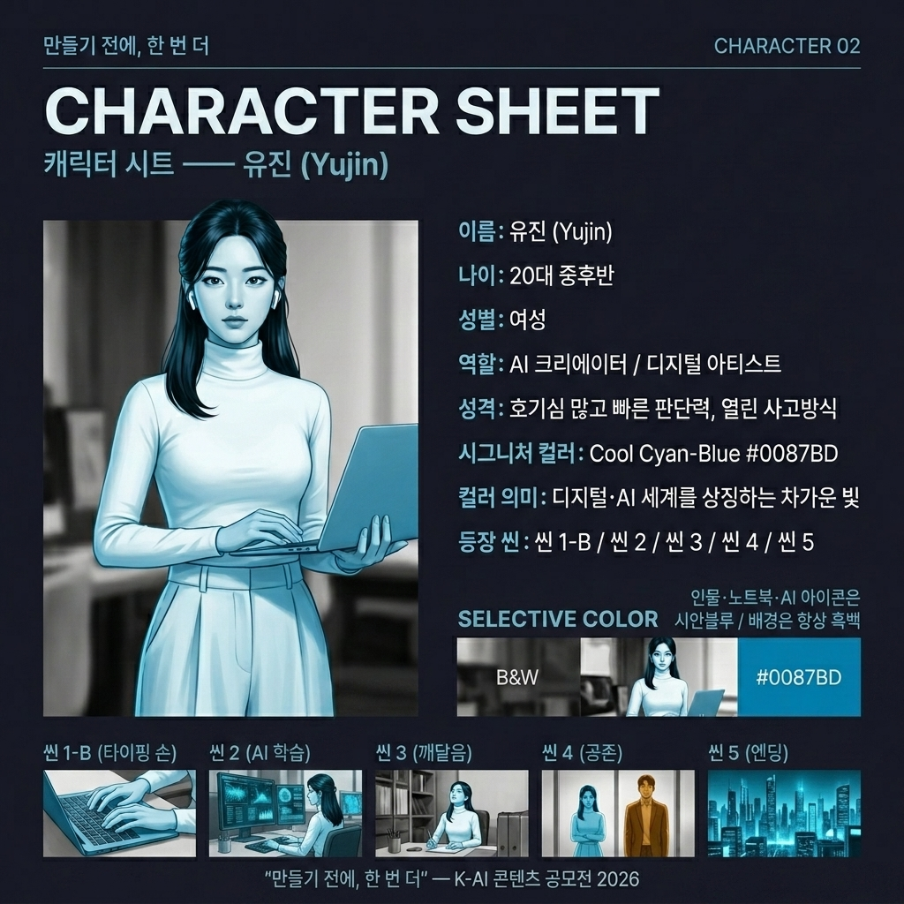
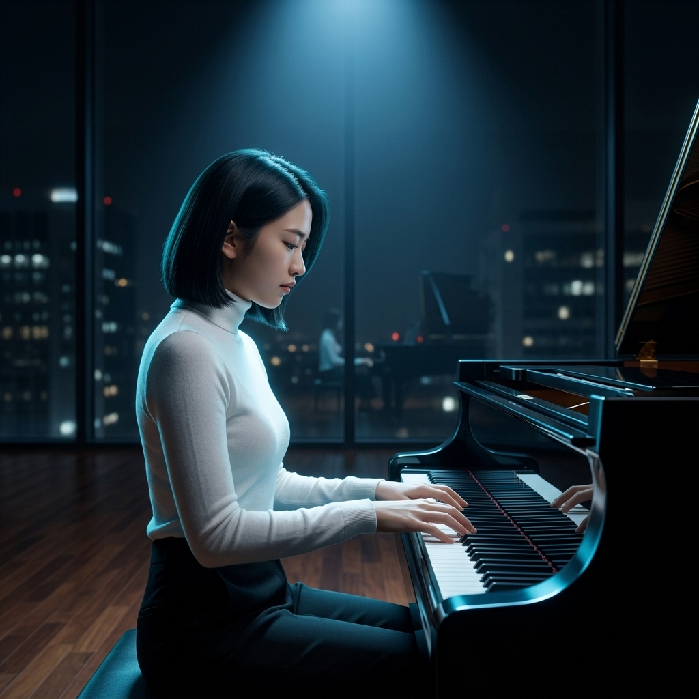

"AI로 만들 때도, 창작자를 먼저 생각합니다."
※ 본 웹페이지는 기존 PDF 스토리보드(기획) 문서를 대체하는 HTML 공식 배포판입니다.
공모주제와 핵심 메시지 및 제작 파이프라인 개요
| 항목 | 상세 내용 |
|---|---|
| 브랜드(캠페인)명 | 만들기 전에, 한 번 더 (Think Once More, Before You Create) |
| 공모 주제 | AI 윤리 준수 — 생성형 AI 사용 시 지켜야 할 에티켓 및 저작권 보호 |
| 핵심 메시지 | "AI로 만들 때도, 창작자를 먼저 생각합니다." |
| 슬로건 | 만들기 전에, 한 번 더. |
| 타겟 | 생성형 AI 창작 도구를 사용하는 대학생, 크리에이터 및 일반인 (20~40대) |
| 톤앤매너 | 미니멀, 감성적 / 차분하고 여운이 있는 시네마틱 스타일 |
| 차별점(USP) | 단순히 기술을 자랑하는 것을 넘어, "AI 생성물에서도 원작자의 권리를 존중하는 태도" 자체가 새로운 창작 문화임을 감성적으로 표현 |
본 프로젝트는 기획 의도가 프롬프트를 거쳐 최종 영상으로 구현되기까지 전체 프로세스를 생성형 AI 도구 위주로 구축하였습니다.
| 프로세스 구분 | Version 1 (v1) | Version 2 (v2) | 도구 선택 사유 |
|---|---|---|---|
| 텍스트/기획 | 네이토 | Google Gemini | 브랜드 아이덴티티 수립 및 서사 구조(기승전결) 브레인스토밍 |
| 이미지 생성 | 네이토 | Google Gemini |
- 네이토: 선명한 텍스트 묘사 및 플랫 일러스트 제작 우수 - Gemini: 프롬프트 충실도가 높고 고품질 시네마틱 이미지 생성 탁월 |
| 비디오 변환 | 네이토 | Google Veo | 정적인 키비주얼 이미지에 씬별 의도에 맞는 세밀한 물리 모션(카메라 줌, 입자 움직임) 부여 |
| 음성 합성(TTS) | 네이토 | Google Vertex TTS | 차분하고 진정성 있는 자연스러운 한국어 나레이션 합성 |
| 배경음악(BGM) | 공모전 공식 지정 음원 | 공모전 공식 지정 음원 | 공모전 필수 규정 준수 (지정 음원 활용) |
| 영상 편집 | 네이토 | 다빈치리졸브 | 컷 편집, 자막 삽입, AI 워터마크 노출, 오디오 믹싱 및 페이드아웃 통합 |
캐릭터 시트 반영 및 씬별 상세 연출 계획
영상 내 통일성 있는 인물 구현과 디자인 일관성을 위해 설계된 두 명의 페르소나 캐릭터 시트입니다.


A dramatic close-up of a painter's hand holding a fine brush, making a single delicate stroke on a white canvas. Chiaroscuro lighting, dark studio background, warm golden highlights, shallow depth of field, cinematic, photorealistic, 4K.A close-up of elegant fingers resting on black and white piano keys, soft dramatic studio lighting, dark blurred background, cool blue and white tones, shallow depth of field, cinematic, photorealistic, 4K.A close-up of a writer's hand typing on a mechanical keyboard, fingers mid-keystroke, one key in sharp focus, dark moody background, desaturated cool tones with warm fingertip highlight, cinematic, photorealistic, 4K.
Cinematic slow motion, subtle finger movements, camera slowly focusing on details, 24fps.
An abstract digital visualization of thousands of tiny artworks, music notes, handwritten text, and painting fragments all flowing and converging into a single glowing AI neural network icon at the center. Deep dark navy space background, electric blue and white luminous particles, flowing data streams, cinematic, high contrast, dramatic, 4K.Thousands of tiny image and text particles swirl and stream inward, converging into the central glowing AI icon which pulses with light, smooth flowing motion.A medium shot of a 20s male creator Sangwoo's silhouette sitting at a desk with a laptop, the laptop screen glowing brightly showing colorful AI-generated artwork. Soft warm sunlight streaming through a window behind the figure, golden dust particles floating in the light, lens flare, cinematic, hopeful atmosphere, photorealistic, 4K.The person slowly raises their head and looks at the glowing screen, warm sunlight gradually brightens, cinematic slow motion.A minimalist flat vector illustration of two friendly figures standing side by side. Left figure: an artist holding a paintbrush and color palette. Right figure: a person using a laptop with a small glowing star icon on the screen. Clean white background, pastel color palette of soft blue and warm yellow, simple geometric shapes, balanced and warm composition, no text, no shadows.The two figures simultaneously turn toward each other and nod gently, subtle friendly animation, soft pastel glow between them.시네마틱 톤앤매너와 기획 의도 구현을 위한 프롬프트 최적화 기록
| 수정 구분 | 내용 및 텍스트 변화 |
|---|---|
| 수정 전 프롬프트 | many images and text flowing into an AI icon |
| 발생한 한계점 |
- 단순한 카툰 및 일러스트 풍으로 형성되어 광고 전체의 시네마틱 무드와 이질감 발생. - 유입되는 입자(창작물 조각)들의 밀도와 긴장감이 낮아 AI 학습 과정의 시각적 카리스마 부족. |
| 개선 및 튜닝 전략 |
1. 화풍 명시: abstract digital visualization, cinematic, dramatic, 4K 추가2. 컬러 배합 고정: Deep dark navy space background, electric blue and white luminous particles 적용3. 소재의 구체성 확보: 단순 image/text 대신 thousands of tiny artworks, music notes, handwritten text, and painting fragments 명시하여 다양성 부여
|
| 수정 후 프롬프트 | An abstract digital visualization of thousands of tiny artworks, music notes, handwritten text, and painting fragments all flowing and converging into a single glowing AI neural network icon at the center. Deep dark navy space background, electric blue and white luminous particles, flowing data streams, cinematic, high contrast, dramatic, 4K. |
| 개선 결과 | 우주 공간을 연상시키는 신비로운 백그라운드에 세밀한 텍스트 및 오디오 파티클이 광활하게 움직여 완성도 높은 AI 수렴 컷을 얻을 수 있었습니다. |
공모전 규격 부합 여부 및 제작 에티켓 준수 자율 자가검토
외부 상업용 유료 스톡 비디오나 실사 촬영은 배제하고, 순수 AI 생성 소스와 공모전 지정 리소스로만 영상을 구성하였습니다.
공식 지정 무료 배포 음원만을 사용하고 영상 우측 하단에 공식 AI 워터마크를 투명도 100%로 전체 구간에 노출 완료했습니다.
단순 컷 편집, 나레이션 타이밍 싱크, 순차 자막 타이포그래피 구현을 위한 최소한의 도구로만 활용했습니다.
지적 재산 침해 예방, 딥페이크 악용 방지, 유해 콘텐츠(혐오, 폭력) 생성 요소 차단을 위한 면밀한 검토 완료.
제작 파이프라인을 거쳐 완성된 2가지 버전의 광고 동영상
디자인의 정밀성과 텍스트 레이아웃의 선명함을 강조한 버전
극적이고 사실적인 시네마틱 라이팅과 정밀한 캐릭터 일관성 제어(상우 캐릭터 시트 적용) 버전